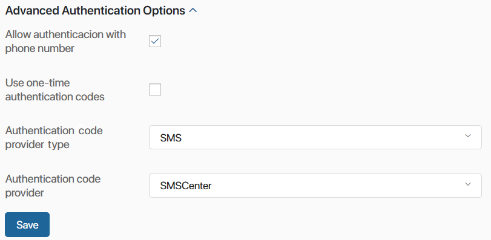

To increase data protection, set the requirements for user logins. To do this, go to Administration > Security Settings.
Here you can:
- Specify the minimum password length, its quality, and periodic reset.
- Restrict the number of invalid login attempts and configure conditions for user account lockout.
- Enable two-factor authentication.
- Enable authentication with a phone number.
- Specify inactivity timeout.
- Restrict access to file downloads for unauthorized users.
начало внимание
Only users included in the Administrators group can change the Security Settings.
конец внимание
Password policy
The settings configured in this section are applied:
- When internal users log in to the system and when passwords are reset.
- When external users log in to the portal.
You can regulate the strength of passwords for both internal and external users, as well as set lockout settings for unsuccessful login attempts to the system or portal.
The available password policy options are:
- Minimum password length. Specify the minimum number of characters in a password. If the password isn't long enough, the system will notify the user about it when they try to sign in.
- Use complex password. If this option is enabled, the system will require a password to contain upper- and lowercase letters, numbers, and special characters, for example, +! #, etc. If the password does not meet the requirements, when trying to log in, the user will see a notification.
- Number of invalid login attempts. Enter the number of times the user can attempt to log in to their account with an invalid password before the account is locked. To disable the option, set its value to 0.
- Reset account lockout counter after. Enter the number of minutes before the counter resets to 0 after a failed login attempt. If the limit is not exceeded, the counter starts from zero after the set period. The user will not be locked.
For example, you limited the number of invalid login attempts to three and set the account lockout time to one minute. The user who has entered the wrong password twice can wait for one minute and get three login attempts again.
If the time limit is set to 0, the counter won’t be reset and the system will lock the user account after the limit of invalid login attempts is reached.
- Account lockout duration in minutes. Enter the number of minutes until the account unlocks after a user exceeds the limit of login attempts. During the lockout, the user's status remains Active, but the Account is locked label appears in their profile. Once the lockout period expires, the user can try to log in again.
If the lockout duration is set to 0, the only person who can unlock the user is the Administrator. To unlock a user, open their profile:- In Administration > Users for an internal user.
- In System apps > External users for an external user.
- User groups that must be informed about account lockout. Here you can specify the user groups that will be notified in the #Activity stream about account lockout.
- Frequency of resetting the password (in days). Specify how often users must change the passwords to log in. To disable the option, set its value to 0.
- Email resend interval, in days. Specify the period for sending emails to remind the user to change the password. If the interval is set to 0, the email will be sent only once. After changing the password, the sending of emails stops automatically.
- Escalation. This option allows locking a user until the password is changed.
- Forbid password recovery. Enable the option not to show the Recover Password link on the system authorization page. If this option is active, users will not be able to recover their password. Please note that for an external user password recovery is set in the portal settings.
External authentication providers
By default, users in BRIX are authorized by login and password. If the OAuth2 custom module is configured, you can allow users to sign in using account credentials from a specific external service.
Allow OAuth2 authentication. Check this option to allow users to sign in to BRIX using account data from an external OAuth2 service.
OAuth2 providers. Specify the connected provider that users can use to sign in. If the field is not filled in, users from all configured OAuth2 providers will be able to sign in.
Allow SAML authentication. Check this option to allow users to sign in using SAML account data.
SAML providers. Select the configured integration with SAML service. If integration is not selected, users from all connected SAML servers will be able to sign in to the system.
Default authentication method. Select the display of the BRIX authentication form:
- Internal (login / password). It is preferable to log in with the BRIX login and password. The authentication page will display a standard window with fields for entering login and password. To sign in using an external service, the user needs to click the Use another sign-in method button and enter their data.
- External. It is preferable to log in via an external authorization service. The BRIX authentication page will immediately display a window where the user can select one of the available services. The list includes providers for which the OAuth2 module is configured in the system. The user will also be able to click Sign in with login/password to authorize with BRIX credentials.
- Through authentication. The provider’s authorization page will open. If the user has already authorized, there is no need to enter credentials again. Please note that the user cannot log in with BRIX credentials in this case. The option is available if the following conditions are met:
- Only OAuth2 authentication is enabled.
- Only one provider for authentication is added.
- The required feature flag is enabled on the server. Please contact BRIX tech support to activate it.
Two-factor authentication
You can require internal users to additionally verify their identities to ensure that the account is used by your employee and not someone else.
To set up two-factor authentication:
- Select the Second authentication factor.
- SMS. Users will be required to enter the login, password, and individual code from SMS. The code will be sent to the phone number specified in the user profile settings in the Mobile field. If this field is empty, the user logs in using only a login and password.
- SMS provider*. Select the SMS service provider the system will use to send the individual code to the user.
начало внимание
If the provider is not listed, make sure that an integration module is enabled and set up for this provider.
конец внимание
- Email. Users will be required to enter the login, password, and individual code sent to their emails. The email will be sent to the address specified during registration of the user in the system.
Important: in BRIX On-Premises, the authentication code is sent through the SMTP server specified during system installation.
- Custom module. To log in, a user enters a login, password, and individual code. It is sent to a third-party service account specified in the user profile in the Accounts field. If this field is empty, the user logs in using only a login and password.
- Module*. Select a service provider to send the authorization code to. If the option is not in the list, make sure that the custom module for two-factor authentication is enabled and configured for the service provider.
- Click the Save button. You will receive a verification code for the connection to the service. Depending on the selected authentication factor, the code will be sent via email, SMS, or a third-party service.
- In the opened window, enter the received code and click the Confirm button.

Please note that if you close the verification window or enter an incorrect code, the two-factor authentication settings will not be saved.
Advanced authentication options
Users can accept invites to BRIX, sign in and restore their password using the phone number specified in their user profile instead of the login.
To make that possible, you need to set up an SMS module and enable authentication with a phone number.
Signing in with login and OAuth will remain available as well as restoring password and inviting users with email.

To enable authentication with a phone number, fill out the settings:
- Allow authentication with phone number. Check the box to activate authentication, user invites, and password recovery with the phone number.
- Use one-time authentication codes. Check the box so that users can sign in to BRIX with authentication codes without having to enter the password.
- Authentication code provider type. At the moment only the SMS type is available.
- Authentication code provider. Select an SMS module that you have set up. The selected provider will send one-time codes for users to sign in, send invites, restore password, and save advanced authentication features.
Click Save. A code will be sent to your phone number for checking the connection with the service.
In the provided window, enter the code and click Confirm.
When you save the settings, the phone numbers of all the users will be checked. If there are users without a phone number or users with the same number, you will see an alert about it. You will be able to save your settings only after having resolved the issue.
Once you enable authentication with a cell phone, the following happens:
- The Email field on the user invite form and in profile settings becomes optional and editable.
- The Mobile phone field on the user invite form and in profile settings becomes required. It is possible to edit the phone number only if there is an email address specified for the user.
- The uniqueness of user phone numbers is checked.
- The authentication window changes. If one-time codes are enabled, the user sees a field for entering their phone number, and the Get Code button. With this type of authentication, two-factor authentication becomes inactive.
User sessions
You can:
- Close user sessions when inactive. Enable this option and specify the inactivity timeout. When a user remains inactive for the specified period of time, the session is automatically terminated. To continue working in the system, the user will have to sign in again regardless of the license type they are using.
- Limit parallel sessions. Enable this option and specify on how many devices a user can stay signed in at the same time. When this number is reached, the user will see an alert when trying to sign in on another device. The new session will not be created until the user signs out of the system on one of the other devices. This is applied to all authentication methods: login and password, and OAuth2. For example, if two parallel sessions are allowed, the user can successfully sign in in the Chrome browser and the mobile app. When trying to sign in in the Firefox browser, the error will appear after the login and password are checked.
начало внимание
For SaaS Enterprise and On-Premises, session settings are available only if the BRIX Advanced Security Pack solution is activated.
конец внимание
File protection
If someone tries to download a file from BRIX via a direct link, you can check if the user is authorized in the system and has access to the file or not.
To enable this feature:
- In the SaaS Standard edition, the option is available by default but requires additional configuration. Please contact BRIX tech support.
- In the SaaS Enterprise edition and On-Premises delivery, enable file protection in the security settings. The option is available if the BRIX Advanced Security Pack solution is activated. Also, for the On-Premises edition, working via HTTPS must be set up.
Found a typo? Select it and press Ctrl+Enter to send us feedback